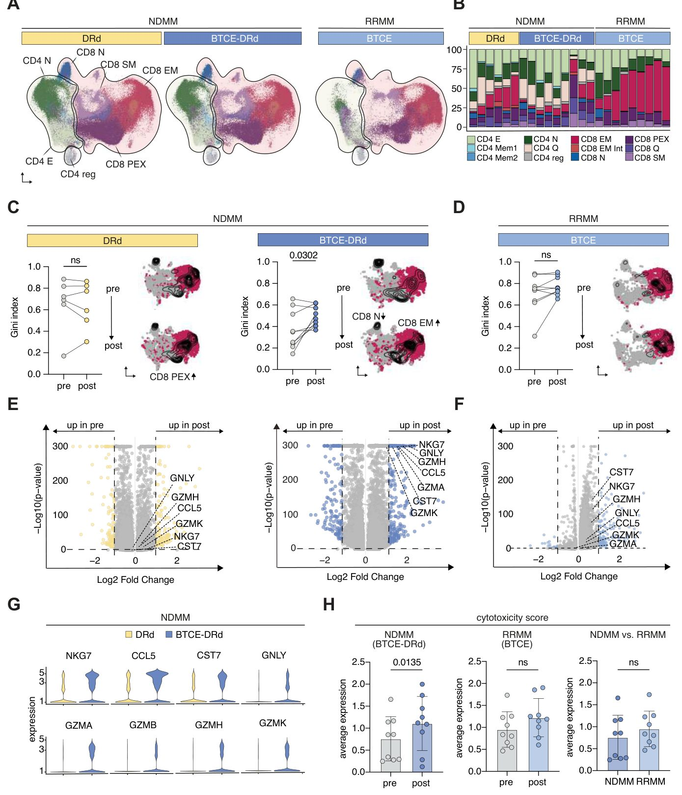
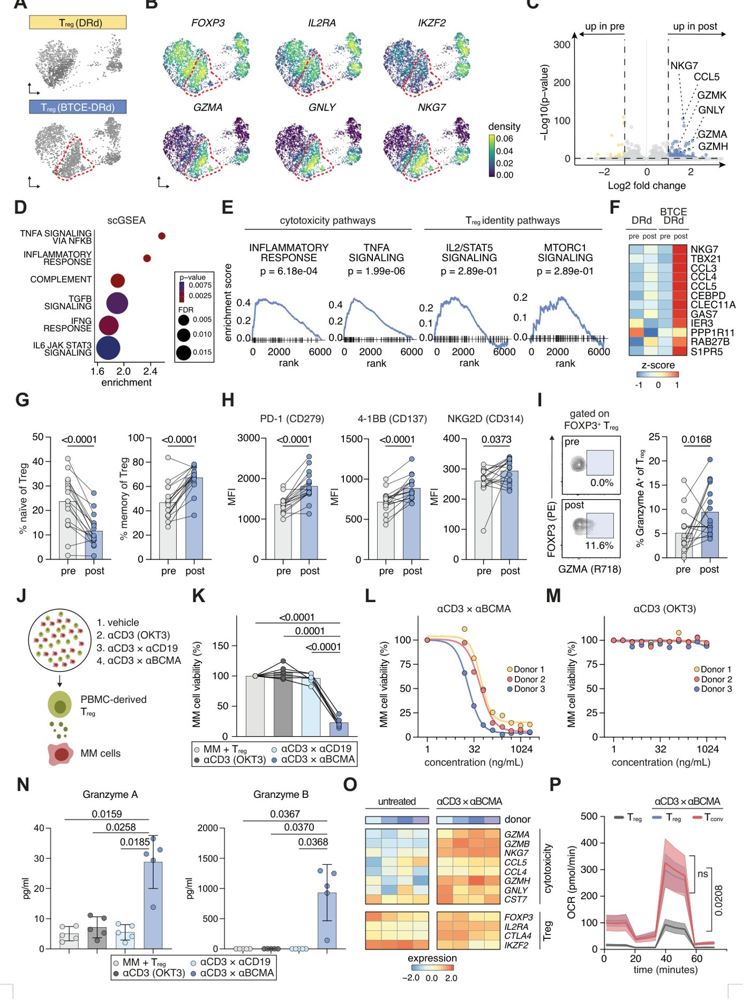

Секретное оружие иммунитета: как регуляторные Т-клетки начинают бороться с раком

Полное описание рисунка
Рисунок 1. Терапия BTCE первой линии усиливает клинический ответ и изменяет состав периферических Т-клеток при впервые диагностированной миеломе. (A) Графики «пловца», отображающие сроки лечения, клинические ответы и точки сбора образцов для когорт впервые диагностированной множественной миеломы (NDMM) (слева) и рецидивирующей/рефрактерной множественной миеломы (RRMM) (справа). BTCE — биспецифический активатор Т-клеток. C — цикл. D — день. DRd — даратумумаб + леналидомид + дексаметазон. DVRd — даратумумаб + бортезомиб + леналидомид + дексаметазон. PR — частичный ответ. (B) Распределение категорий ответа после 3-го цикла для пациентов с NDMM (BTCE-DRd, n=14; BTCE-DVRd, n=3; DRd, n=6) и пациентов с RRMM (n=18). Категории ответа включают: PD (прогрессирующее заболевание), SD (стабилизация заболевания), MR (минимальный ответ), n.d. (не выполнено или не подлежит оценке), PR (частичный ответ), VGPR (очень хороший частичный ответ) и CR/sCR (полный ответ/строгий полный ответ). (C) Абсолютное количество лимфоцитов (ALC) в периферической крови с течением времени для когорт лечения BTCE-D(V)Rd и DRd (слева); сравнение ALC после лечения (после C3) между BTCE-D(V)Rd (n=17) и DRd (n=6) (в центре); и парное сравнение ALC до (перед C1) и после лечения (после C3) для BTCE-D(V)Rd (n=16) (справа). P-значения указаны для соответствующих сравнений и рассчитаны с помощью U-критерия Манна-Уитни и критерия знаковых рангов Уилкоксона для парных выборок соответственно. (D) Проточная цитометрия основных субпопуляций лимфоцитов в периферической крови до (перед C1) и после (после C3) лечения BTCE, включая процент CD3⁺ Т-клеток, NK-клеток и B-клеток среди живых PBMC, процент CD4⁺ Т-хелперов и CD8⁺ цитотоксических Т-клеток среди CD3⁺ Т-клеток, а также процент FOXP3⁺ регуляторных Т-клеток (Tregs) среди CD4⁺ Т-клеток. (E) Репрезентативные FACS-графики и количественная оценка наивных, центральных клеток памяти (CM) и эффекторных клеток памяти (EM) Т-клеток, идентифицированных по экспрессии CCR7 и CD45RO. (F) Количественная оценка наивных, CM и EM субпопуляций в составе CD4⁺ и CD8⁺ Т-клеток. (G) Репрезентативный FACS-график и количественная оценка экспрессии PD-1 на CD3⁺ Т-клетках периферической крови до (перед C1) и после (после C3) лечения. Для панелей (D–G) статистическая значимость оценивалась с помощью парных t-критериев. Парные данные были доступны для n=17 пациентов из когорты BTCE-D(V)Rd.
Регуляторные Т-клетки (Tregs) традиционно считаются «миротворцами» иммунитета, которые подавляют активность других клеток. Однако новое исследование показывает, что биспецифические антитела, используемые в терапии рака, заставляют их менять специализацию. Вместо защиты опухоли эти клетки начинают атаковать её, становясь полноценными участниками борьбы с болезнью.
Главное
- BTCE перепрограммируют регуляторные Т-клетки в цитотоксические эффекторы
- Процесс управляется ремоделированием хроматина через факторы AP-1 и BATF
- Иммуномодуляторы усиливают противоопухолевую активность этих клеток
Подробнее
Биспецифические Т-клеточные энгейджеры (BTCE) — это препараты, которые физически сближают опухолевые клетки и Т-лимфоциты, запуская процесс уничтожения рака. Исследователи проанализировали образцы костного мозга и крови пациентов с множественной миеломой, получавших терапию в рамках клинического испытания MajesTEC-5. Выяснилось, что под влиянием BTCE регуляторные Т-клетки (Tregs), экспрессирующие маркер FOXP3, проходят через процесс перепрограммирования. В их ядре происходит ремоделирование хроматина, управляемое факторами транскрипции AP-1 и BATF, что превращает их в цитотоксические эффекторы.
В лабораторных экспериментах такие «переобученные» Tregs продемонстрировали способность напрямую уничтожать опухолевые клетки, сохраняя при этом свои базовые маркеры идентичности. Добавление иммуномодулирующих препаратов (IMiDs) дополнительно усиливает этот цитотоксический эффект. Это открытие меняет представление о пластичности иммунной системы и предлагает новый способ оптимизации иммунотерапии, где даже клетки, обычно подавляющие иммунитет, могут быть направлены против злокачественного процесса.
Ограничения
Работа является препринтом, не прошедшим рецензирование, и основана на анализе ограниченной выборки пациентов в рамках одного клинического испытания.
Подробный разбор статьи
Резюме
Биспецифические T-клеточные энгейджеры (BTCE) произвели революцию в терапии B-клеточных злокачественных новообразований, однако их влияние на неконвенциональные T-клеточные цепи и оптимальные стратегии комбинированной терапии остаются недостаточно изученными. В данной работе показано, что CD3-направленные BTCE трансформируют регуляторные T-клетки (Tregs) человека (FOXP3⁺) в гибридное цитотоксическое состояние, управляемое фактором AP-1, что способствует элиминации опухоли.
Важно
BTCE перепрограммируют регуляторные T-клетки в цитотоксические эффекторы, что способствует уничтожению опухолевых клеток.
Авторы использовали продольные образцы костного мозга и периферической крови пациентов с впервые диагностированной множественной миеломой (NDMM), участвовавших во 2-й фазе клинического исследования (GMMG-HD10/DSMM-XX/MajesTEC-5), где достигалась глубокая MRD-негативная ремиссия. Был проведен комплексный анализ, включающий секвенирование РНК, ATAC-seq и TCR-секвенирование единичных клеток, а также функциональное и метаболическое профилирование.
Пояснение
ATAC-seq — метод анализа доступности хроматина, позволяющий понять, какие участки генома активны в клетке в данный момент.
Индукционная терапия на основе BTCE стимулирует экспансию цитотоксических CD8⁺ клонов и появление популяции Tregs, экспрессирующих GZMA, GNLY и NKG7. Эти клетки характеризуются обогащенными сигнатурами цитотоксических генов, активность которых обеспечивается ремоделированием хроматина вокруг сайта связывания BATF-AP-1. В экспериментах in vitro было подтверждено, что такие Tregs приобретают способность к лизису опухолевых клеток, причем этот процесс зависит от дозы и наличия мишени. При этом клетки проходят метаболическую перестройку в сторону эффекторного фенотипа, сохраняя при этом классические маркеры линии Tregs.
Осторожно
Наблюдаемые эффекты in vitro могут не полностью отражать сложность микроокружения опухоли у пациентов.
Иммуномодулирующие препараты (IMiD) не запускают, но количественно усиливают и качественно модифицируют эту цитотоксическую программу, что обосновывает эффективность комбинированных схем BTCE-IMiD. Данный феномен пластичности Tregs наблюдается при использовании BTCE, нацеленных на BCMA, GPRC5D и CD19, как при множественной миеломе, так и при остром лимфобластном лейкозе. Эти данные открывают новые возможности для использования цитотоксических Tregs в качестве биомаркеров и инструментов оптимизации иммунотерапии.
Введение
Иммунотерапия с перенаправлением Т-клеток
Иммунотерапия, основанная на перенаправлении Т-клеток, радикально меняет подходы к лечению онкологических заболеваний и начинает применяться при аутоиммунных патологиях. Ключевым инструментом здесь выступают биспецифические Т-клеточные энгейджеры (BTCE) — готовые антитела, которые одновременно связываются с опухолевым антигеном и CD3 на поверхности Т-клеток. Это создает искусственный иммунологический синапс, вызывая цитотоксичность независимо от классической презентации антигена. Препараты, нацеленные на BCMA или GPRC5D, показали высокую эффективность при рецидивирующей множественной миеломе, В-клеточных лимфомах и остром лимфобластном лейкозе, что привело к их быстрому внедрению в клиническую практику, включая терапию первой линии.
Важно
BTCE обеспечивают мощный противоопухолевый ответ, однако механизмы резистентности и долгосрочной эффективности остаются не до конца изученными.
Несмотря на успехи, ответы на терапию BTCE часто недолговечны, а причины неудач изучены недостаточно. Ранее было показано, что клинический успех зависит от способности организма расширять популяцию цитотоксических CD8⁺ Т-клеток, экспрессирующих CX3CR1, тогда как истощенные фенотипы Т-клеток коррелируют с прогрессированием болезни. Однако роль неканонических субпопуляций, таких как регуляторные Т-клетки (Tregs), в условиях постоянной стимуляции BTCE остается неясной. Tregs, экспрессирующие FOXP3, критически важны для иммунной толерантности, но часто подавляют противоопухолевый иммунитет, а их накопление в микроокружении опухоли при миеломе связано с плохим прогнозом.
Пояснение
Tregs (регуляторные Т-клетки) — это субпопуляция Т-лимфоцитов, чья основная функция заключается в подавлении чрезмерного иммунного ответа и поддержании толерантности к собственным тканям организма.
Репрограммирование регуляторных Т-клеток при терапии BTCE
В данной работе мы объединили методы лонгитюдного мультиомиксного анализа единичных клеток с функциональным моделированием, чтобы изучить изменения в Т-клеточном компартменте. Мы проанализировали образцы костного мозга и периферической крови пациентов с впервые диагностированной множественной миеломой, получавших индукционную терапию BCMA×CD3 BTCE в рамках исследования MajesTEC-5, а также пациентов, получавших стандартную терапию или монотерапию BCMA×CD3 при рецидиве. Мы построили клональные, транскрипционные и эпигенетические траектории основных субпопуляций Т-клеток.
Осторожно
Исследование основано на клинических образцах пациентов, что требует осторожности при интерпретации причинно-следственных связей в сравнении с контролируемыми экспериментами на моделях.
Результаты показывают, что терапия BTCE не только стимулирует экспансию цитотоксических CD8⁺ клонов, но и перепрограммирует FOXP3⁺ Tregs в уникальное цитотоксическое состояние. Эти клетки начинают экспрессировать GZMA, GZMB, GNLY, NKG7 и TBX21, демонстрируя метаболическую перестройку и ремоделирование хроматина, опосредованное фактором BATF-AP-1. Такие «цитотоксические Tregs» сохраняют маркеры своей линии, но приобретают способность к прямому лизису опухолевых клеток, причем этот эффект усиливается при добавлении иммуномодулирующих препаратов. Данный феномен наблюдается при использовании различных BTCE (BCMA, GPRC5D, CD19) и при разных гематологических злокачественных новообразованиях, что опровергает представление о Tregs как о пассивных супрессорах в контексте иммунотерапии.
Результаты
Индукционная терапия с добавлением BTCE преодолевает высокую опухолевую нагрузку и перестраивает системный Т-клеточный иммунитет при впервые диагностированной миеломе
Исследование основано на данных пациентов из клинического испытания Majes-TEC-5 (NCT05695508), где биспецифические антитела (BTCE) теклистамаб (BCMA×CD3) включались в схему индукционной терапии впервые диагностированной множественной миеломы (NDMM). Мы проанализировали образцы костного мозга и периферической крови 17 пациентов до начала терапии и после 3-го цикла. Группы включали 14 человек, получавших теклистамаб с даратумумабом, леналидомидом и дексаметазоном (BTCE-DRd), и 3 человек, получавших теклистамаб с даратумумабом, бортезомибом, леналидомидом и дексаметазоном (BTCE-DVRd). Контрольную группу составили 6 пациентов, получавших стандартную терапию (SOC) DRd. Также для сравнения использовались данные 18 пациентов с рецидивирующей/рефрактерной миеломой (RRMM), получавших монотерапию BTCE (Рис. 1A, Таблицы SN 1-2).
Полное описание рисунка
Рисунок 1. Терапия BTCE первой линии усиливает клинический ответ и изменяет состав периферических Т-клеток при впервые диагностированной миеломе. (A) Графики «пловца», отображающие сроки лечения, клинические ответы и точки сбора образцов для когорт впервые диагностированной множественной миеломы (NDMM) (слева) и рецидивирующей/рефрактерной множественной миеломы (RRMM) (справа). BTCE — биспецифический активатор Т-клеток. C — цикл. D — день. DRd — даратумумаб + леналидомид + дексаметазон. DVRd — даратумумаб + бортезомиб + леналидомид + дексаметазон. PR — частичный ответ. (B) Распределение категорий ответа после 3-го цикла для пациентов с NDMM (BTCE-DRd, n=14; BTCE-DVRd, n=3; DRd, n=6) и пациентов с RRMM (n=18). Категории ответа включают: PD (прогрессирующее заболевание), SD (стабилизация заболевания), MR (минимальный ответ), n.d. (не выполнено или не подлежит оценке), PR (частичный ответ), VGPR (очень хороший частичный ответ) и CR/sCR (полный ответ/строгий полный ответ). (C) Абсолютное количество лимфоцитов (ALC) в периферической крови с течением времени для когорт лечения BTCE-D(V)Rd и DRd (слева); сравнение ALC после лечения (после C3) между BTCE-D(V)Rd (n=17) и DRd (n=6) (в центре); и парное сравнение ALC до (перед C1) и после лечения (после C3) для BTCE-D(V)Rd (n=16) (справа). P-значения указаны для соответствующих сравнений и рассчитаны с помощью U-критерия Манна-Уитни и критерия знаковых рангов Уилкоксона для парных выборок соответственно. (D) Проточная цитометрия основных субпопуляций лимфоцитов в периферической крови до (перед C1) и после (после C3) лечения BTCE, включая процент CD3⁺ Т-клеток, NK-клеток и B-клеток среди живых PBMC, процент CD4⁺ Т-хелперов и CD8⁺ цитотоксических Т-клеток среди CD3⁺ Т-клеток, а также процент FOXP3⁺ регуляторных Т-клеток (Tregs) среди CD4⁺ Т-клеток. (E) Репрезентативные FACS-графики и количественная оценка наивных, центральных клеток памяти (CM) и эффекторных клеток памяти (EM) Т-клеток, идентифицированных по экспрессии CCR7 и CD45RO. (F) Количественная оценка наивных, CM и EM субпопуляций в составе CD4⁺ и CD8⁺ Т-клеток. (G) Репрезентативный FACS-график и количественная оценка экспрессии PD-1 на CD3⁺ Т-клетках периферической крови до (перед C1) и после (после C3) лечения. Для панелей (D–G) статистическая значимость оценивалась с помощью парных t-критериев. Парные данные были доступны для n=17 пациентов из когорты BTCE-D(V)Rd.
Пояснение
BTCE (биспецифические Т-клеточные энгаджеры) — это препараты, которые физически сближают Т-лимфоциты пациента с опухолевыми клетками, заставляя иммунную систему атаковать миелому.
Клинический ответ в группе с BTCE был универсальным и глубоким: 100% пациентов (17/17) достигли ответа после 3 циклов, при этом у всех была достигнута MRD-негативность (минимальная остаточная болезнь) с чувствительностью 10⁻⁵ (Рис. 1B). В ходе наблюдения все 17 пациентов достигли строгого полного ответа (sCR). В группе SOC (DRd) ответ составил 66,7% (4/6), при этом все пациенты остались MRD-позитивными после 3-го цикла. Важно отметить, что группа с теклистамабом начинала лечение с существенно более высокой опухолевой нагрузкой (медиана 60% инфильтрации плазматическими клетками против 25% в группе DRd; p=0,01; Рис. SN 1A-B).
Важно
Добавление BTCE к индукционной терапии обеспечивает 100% MRD-негативность даже при высокой исходной опухолевой нагрузке, превосходя стандартные схемы лечения.
Терапия с BTCE привела к системной экспансии лимфоцитов. Исходный абсолютный уровень лимфоцитов (ALC) был сопоставим (медиана 1,35 × 10⁹ против 1,02 × 10⁹ кл/л; p=0,9), но после 3-го цикла в группе BTCE он стал значительно выше, чем в группе DRd (медиана 1,67 × 10⁹ против 0,84 × 10⁹ кл/л; p=0,005; Рис. 1C). Общие показатели лейкоцитов и нейтрофилов не различались, что указывает на избирательную активацию лимфоцитов (Рис. SN 1C). Многопараметрическая проточная цитометрия показала значительный рост CD3+ Т-клеток (p=0,0008), преимущественно за счет CD8+ популяции (p<0,0001), тогда как доли CD4+, NK и B-клеток снизились (Рис. 1D, Рис. SN 2A).
Осторожно
Исследование ограничено малым размером выборки (n=17 в основной группе), что требует подтверждения на более крупных когортах.
Наблюдался выраженный переход Т-клеток от наивных к эффекторно-памятевым фенотипам (Рис. 1E-F). Т-клетки в группе теклистамаба повышали экспрессию маркеров активации (CD314, CD29), дифференцировки (CD45RO) и раннего истощения (PD-1), одновременно снижая уровень маркеров хоминга и костимуляции (CD62L, CD27high) (Рис. 1G, Рис. SN 2). Таким образом, BTCE не только обеспечивают глубокую ремиссию, но и фундаментально перестраивают иммунный ландшафт.
Терапия BTCE первой линии перестраивает клонотипы Т-клеток и запускает программу цитотоксических эффекторов в костном мозге
Для изучения влияния индукционной терапии на основе биспецифических антител, направленных на Т-клетки (BTCE), мы проанализировали продольные образцы костного мозга пациентов из исследования MajesTEC-5. Методом совместного профилирования транскриптома одиночных клеток и TCR-репертуара мы оценили изменения в Т-клетках у 9 пациентов, получавших Tec-DRd, 6 пациентов на стандартной терапии DRd и 18 пациентов с рецидивирующей/рефрактерной множественной миеломой (RRMM), получавших монотерапию BTCE (Рис. SN3). Проекция на эталонный атлас Т-клеток миеломных больных позволила выделить 6 субпопуляций CD8⁺ Т-клеток, 5 субпопуляций CD4⁺ и популяцию регуляторных Т-клеток (Treg) (Рис. 2A, Рис. SN3B-D).


Полное описание рисунка
Рисунок 2. BTCE стимулирует цитотоксические транскрипционные программы и изменяет клональную архитектуру Т-клеток. (A) UMAP-визуализация Т-клеточных субпопуляций из образцов NDMM и RRMM (всего 504 969 Т-клеток), аннотированных на 3 основные группы и 12 транскрипционно определенных кластеров. NDMM — впервые диагностированная множественная миелома. RRMM — рецидивирующая/рефрактерная множественная миелома. (B) Исходное (до терапии / перед C1) распределение Т-клеточных кластеров по группам лечения, где каждый столбец представляет отдельного пациента. (C–D) Индексы Джини, количественно определяющие пространственное распределение CD8 эффекторных клеток памяти (EM) Т-клеток в пространстве UMAP, сравнивающие временные точки до (перед C1) и после (после C3) лечения в когортах DRd, BTCE-DRd (NDMM) и BTCE (RRMM). Каждый образец был уменьшен до минимального количества парных Т-клеток. P-значения отражают результаты парных t-критериев. BTCE — биспецифический активатор Т-клеток. DRd — даратумумаб/леналидомид/дексаметазон. (E–F) Вулканические графики, отображающие дифференциальную экспрессию генов между Т-клеточными клонами, присутствующими исключительно до лечения (pre / перед C1) и исключительно после лечения (post / после C3) у пациентов. Клоны, присутствующие только до терапии, классифицировались как pre; присутствующие только после терапии — как post. P-значения были скорректированы с использованием метода Бенджамини-Хохберга. (G) Скрипичные диаграммы, показывающие экспрессию генов, связанных с цитотоксичностью (NKG7, CCL5, CST7, GNLY, GZMA, GZMB, GZMH, GZMK), у пациентов с NDMM, получавших DRd (желтый) или BTCE-DRd (синий). (H) Показатель цитотоксичности (см. Методы), сравнивающий образцы до (перед C1) и после (после C3) терапии в когортах NDMM (BTCE-DRd), n=9; RRMM (BTCE), n=9; и исходных когортах NDMM против RRMM. P-значения рассчитаны с использованием парных t-критериев.
Пояснение
TCR-репертуар — это совокупность всех уникальных Т-клеточных рецепторов в организме, определяющая способность иммунной системы распознавать антигены.
Исходно состав Т-клеток у пациентов с впервые диагностированной миеломой (NDMM) и RRMM различался: у первых преобладали CD8⁺ эффекторные клетки, тогда как у вторых наблюдалось снижение общего числа CD8⁺ Т-клеток при сохранении эффекторных клеток памяти и потере CD4⁺ покоящихся клеток. В группе NDMM исходный состав Т-клеток не различался между будущими группами Tec-DRd и DRd (Рис. 2B, Рис. SN4A), что подтверждает, что последующие изменения обусловлены именно лечением.
Используя индекс Джини для оценки клональной экспансии, мы установили, что у пациентов с NDMM на фоне Tec-DRd происходит значительное увеличение клональной асимметрии, что указывает на BTCE-индуцированную экспансию клонов, в отличие от группы DRd. Аналогичная, но менее выраженная тенденция наблюдалась при RRMM (Рис. 2C-D, Рис. SN4B-C). Интеграция фенотипов и TCR-клонотипов показала, что после терапии BTCE в костном мозге NDMM-пациентов расширялись клоны CD8⁺ эффекторных и CD8⁺ покоящихся клеток при сокращении наивных CD8⁺ Т-клеток, что отражает переход от наивного состояния к эффекторному (Рис. 2C). При RRMM наблюдалась схожая картина, тогда как терапия DRd приводила к сдвигу в сторону фенотипов «прогениторного истощения» (Рис. 2C).
Важно
Терапия Tec-DRd у пациентов с NDMM вызывает специфическую экспансию цитотоксических клонов, что не наблюдается при стандартной терапии или монотерапии BTCE у пациентов с RRMM.
Анализ дифференциальной экспрессии генов в клонах, специфичных для периодов до и после терапии, выявил мощную индукцию генов цитотоксичности (GZMA, GZMH, GNLY, CCL5) исключительно у пациентов с NDMM, получавших Tec-DRd (Рис. 2E). Эта программа не активировалась при стандартной терапии DRd или монотерапии BTCE при RRMM (Рис. 2E-F). Использование кураторской сигнатуры цитотоксичности подтвердило значительное повышение экспрессии этих генов только в группе NDMM при терапии BTCE (Рис. 2G-H). Таким образом, появление высокоцитотоксичных клонов является уникальной чертой терапии BTCE первой линии при первичном заболевании.
Осторожно
Исследование основано на анализе костного мозга; наблюдаемые изменения клонотипов коррелируют с клинической эффективностью, однако требуют дальнейшего изучения для установления прямой причинно-следственной связи.
Терапия BTCE превращает регуляторные Т-клетки FOXP3⁺ в гибридные цитотоксические эффекторные Treg in vivo
Исследование показало, что терапия биспецифическими антителами (BTCE) индуцирует появление высокоцитотоксичных клонов Т-клеток, причем наиболее выраженные изменения происходят в компартменте регуляторных Т-клеток (Treg). Анализ 432 947 Т-клеток костного мозга от 15 пациентов с впервые диагностированной множественной миеломой (NDMM) выявил специфический кластер Treg, возникающий только после терапии BTCE-DRd (Рис. 3A). Эти клетки экспрессируют гены цитотоксичности GZMA, GNLY и NKG7, сохраняя при этом маркеры FOXP3 и IL2RA (Рис. 3B-C). Анализ обогащения наборов генов (GSEA) показал активацию путей NF-κB и воспалительного ответа при сохранении программ mTOR и IL-2/STAT5 (Рис. 3D-E).


Полное описание рисунка
Рисунок 3. BTCE запускает фенотипическое, функциональное и метаболическое перепрограммирование регуляторных Т-клеток (Tregs) в цитотоксические эффекторные клетки. (A) UMAP-графики, показывающие FOXP3⁺ регуляторные Т-клетки (Tregs) у пациентов с NDMM, получавших DRd (сверху) и BTCE-DRd (снизу). Выделены цитотоксические Tregs. BTCE — биспецифический активатор Т-клеток. DRd — даратумумаб + леналидомид + дексаметазон. NDMM — впервые диагностированная множественная миелома. (B) UMAP-карты экспрессии генов идентичности Tregs (FOXP3, IL2RA, IKZF2) и генов, связанных с цитотоксичностью (GZMA, GNLY, NKG7), в составе популяции Tregs. (C) Вулканический график, показывающий дифференциальную экспрессию генов в Tregs у пациентов, получавших BTCE-DRd, при сравнении образцов после (после C3) и до (перед C1) терапии. Выделены повышенно экспрессируемые гены, связанные с цитотоксичностью (NKG7, CCL5, GZMK, GNLY, GZMA, GZMH). (D) Точечный график scGSEA, отображающий P-значения, P-значения с поправкой на FDR и показатели обогащения для иммунных путей, активированных в Tregs после терапии (после C3) у пациентов, получавших BTCE-DRd. (E) Репрезентативные кривые обогащения для выбранных путей, включая воспалительный ответ, передачу сигналов TNFα через NFκB, передачу сигналов IL2/STAT5 и передачу сигналов mTORC1. (F) Тепловая карта экспрессии, нормализованной по z-оценке, для описанных в литературе генов сигнатуры exTreg (TBX21, CCL5, NKG7, GAS7, CCL3, CCL4, S1PR5, CEBPD) в Tregs при лечении DRd и BTCE-DRd до (перед C1) и после (после C3) лечения. Данные получены методом секвенирования РНК единичных клеток из образцов костного мозга. (G) Проточная цитометрия наивных и эффекторных субпопуляций Tregs до (перед C1) и после (после C3) лечения. (H) Медианная интенсивность флуоресценции (MFI) PD-1 (CD279), 4-1BB (CD137) и NKG7 (CD314) на Tregs периферической крови до (перед C1) и после (после C3) лечения. (I) Репрезентативные внутриклеточные FACS-графики и количественная оценка FOXP3⁺ Tregs, совместно экспрессирующих гранзим A (GZMA), в периферической крови пациентов до C1 и после C3 терапии. Панели (G–I) проанализированы с помощью парных t-критериев. Данные получены методом проточной цитометрии образцов периферической крови. (J) Схематический обзор системы совместного культивирования. BCMA — антиген созревания B-клеток. MM — множественная миелома. PBMC — мононуклеарные клетки периферической крови. (K) Жизнеспособность клеток MM1.S после 48-часового совместного культивирования с Tregs здоровых доноров, обработанными блинатумомабом (αCD3×αCD19), OKT3 (αCD3) или теклистамабом (αCD3×αBCMA). Двухфакторный дисперсионный анализ (ANOVA) (n=6). (L) Жизнеспособность клеток MM1.S после 48-часового совместного культивирования с Tregs, обработанными возрастающими концентрациями теклистамаба (n=3). (M) Жизнеспособность клеток MM1.S после 48-часового совместного культивирования с Tregs, обработанными эквимолярными концентрациями OKT3 (n=3). (N) Секреция цитокинов (гранзим A, гранзим B) после 72-часового совместного культивирования при тех же условиях лечения. Двухфакторный дисперсионный анализ (ANOVA) (n=6). (O) Тепловые карты, сравнивающие среднюю экспрессию цитотоксических и определяющих линию генов между Tregs, обработанными in vitro теклистамабом, и необработанным контролем. Данные получены методом bulk-секвенирования РНК. (P) Скорость потребления кислорода (OCR) необработанных и обработанных теклистамабом Tregs и пан-Т-клеток после 48-часового совместного культивирования, измеренная с помощью Seahorse XF. Однофакторный дисперсионный анализ (ANOVA) с повторными измерениями (n=5).
Важно
Терапия BTCE не уничтожает Treg, а перепрограммирует их в гибридное цитотоксическое состояние, накладывая эффекторную программу на базовый регуляторный профиль.
Пояснение
GSEA (Gene Set Enrichment Analysis) — статистический метод, позволяющий определить, статистически значимо ли скоординировано изменение группы генов, связанных с определенным биологическим процессом.
Сравнение с контролем (DRd) показало, что BTCE-терапия смещает фенотип Treg в сторону «exTregs» — клеток, утративших супрессорную функцию и приобретших эффекторные свойства, что подтверждается экспрессией TBX21, TCF7 и CCL5 (Рис. 3F). Проточная цитометрия (n=17) подтвердила системный характер изменений: переход Treg из наивного состояния (CD45RA⁺) в память (CD45RO⁺) и индукцию рецепторов CD137, NKG2D и PD-1 (Рис. 3G-H), а также продукции гранзима А (Рис. 3I, Рис. SN).
Осторожно
Наблюдаемые эффекты in vivo и in vitro указывают на системную перестройку Treg, однако функциональная значимость этого процесса в долгосрочном контроле опухоли требует дальнейшего изучения.
В экспериментах in vitro с использованием очищенных CD25⁺CD127low Treg было показано, что только специфическое воздействие теклистамаба (BTCE) вызывает дозозависимую цитотоксичность против миеломных клеток (Рис. 3J-M). Анализ супернатантов подтвердил секрецию гранзимов A и B (Рис. 3N, Рис. SN). РНК-секвенирование подтвердило сохранение ключевых факторов FOXP3, CTLA4 и IKZF2 при одновременной экспрессии генов цитотоксичности (GZMB, NKG7, GNLY) (Рис. 3O). Метаболический анализ (Seahorse) показал, что такие Treg переходят на высокоэнергетический гликолитически-окислительный профиль, характерный для эффекторных Т-клеток (Рис. 3P, Рис. SN).
Ремоделирование хроматина вокруг AP-1 как механизм формирования гибридного цитотоксического состояния Treg под действием BTCE
Для понимания регуляторных механизмов, позволяющих регуляторным Т-клеткам (Treg) приобретать цитотоксические свойства при воздействии биспецифических Т-клеточных энгейжеров (BTCE), был проведен scATAC-seq на Treg, выделенных из костного мозга пациентов с впервые диагностированной множественной миеломой (NDMM) до и после терапии BTCE-DRd. Анализ дифференциальной доступности хроматина выявил повышение доступности локуса BATF после терапии (Рис. 4A). BATF является ключевым компонентом сети транскрипционных факторов AP-1 и обычно взаимодействует с белками семейства JUN, интегрируя сигналы TCR и цитокинов для запуска дифференцировки эффекторных клеток и цитотоксических программ в обычных Т-клетках. Открытие локуса BATF в Treg под действием BTCE указывает на перепрофилирование регуляции AP-1 для поддержания цитотоксического состояния Treg.

Полное описание рисунка
Рисунок 4. IMiD усиливают цитотоксическое перепрограммирование Tregs, управляемое BTCE/AP-1, независимо от биспецифических мишеней и гематологических злокачественных новообразований. (A) Сверху: треки ATAC-seq, показывающие дифференциальную доступность хроматина в локусе BATF в Tregs, выделенных из образцов костного мозга, полученных после терапии (после C3) по сравнению с до терапии (перед C1). Снизу: анализ обогащения мотивов AP-1 в дифференциально доступных областях, показывающий кратность обогащения репрезентативных мотивов семейства AP-1. (B) qPCR-анализ экспрессии генов Tregs после совместного культивирования с клетками миеломы MM1.S с теклистамабом (αBCMA×αCD3) или без него. Гены сгруппированы по функциям: идентичность Tregs (FOXP3, IKZF2), регуляторы передачи сигналов (MAP3K1, DUSP4, DUSP16, TNFAIP3), цитотоксические эффекторы (GZMA, GZMB, NKG7) и факторы транскрипции (BATF, JUNB, TOX). Для сравнений использовались парные t-критерии. (C) Предлагаемая транскрипционная сеть, индуцированная в Tregs взаимодействием BCMA×CD3. Интенсивность цвета узла отражает log₂-кратность изменений из панели B. (D) Жизнеспособность клеток MM1.S после 48-часового совместного культивирования с Tregs здоровых доноров, обработанными OKT3, теклистамабом, леналидомидом или их комбинациями. Двухфакторный дисперсионный анализ (ANOVA) (n=5). (E) Секреция цитокинов (гранзим A, гранзим B, CCL5, IL-10) после 72-часового совместного культивирования при тех же условиях лечения. Двухфакторный дисперсионный анализ (ANOVA) (n=5). (F) Тепловые карты, сравнивающие среднюю экспрессию цитотоксических и определяющих линию генов между необработанными Tregs и Tregs, обработанными in vitro иммуномодулирующим агентом (IMiD) леналидомидом, биспецифическим активатором Т-клеток (BTCE) теклистамабом или их комбинацией. Данные получены методом bulk-секвенирования РНК. (G) Схематическая иллюстрация n=3 пациентов с впервые диагностированной множественной миеломой (NDMM), включенных в исследование MajesTEC-5 (n=2 группа E; n=1 группа E1) и проходящих индукционную терапию комбинацией талькетамаба (G-белок-сопряженный рецептор класса C группы 5 члена D (GPRC5D)xCD3), даратумумаба, леналидомида и дексаметазона (Tal-DRd). Образцы были собраны до цикла 1 (C1) (pre) и после цикла 3 (C3) (post). (H) UMAP-график, показывающий распределение Т-клеточных субпопуляций среди пациентов, получавших Tal-DRd. Данные получены методом секвенирования РНК единичных клеток из образцов костного мозга. (I) Тепловая карта, показывающая сравнение экспрессии цитотоксических генов, нормализованной по z-оценке, в Tregs между временными точками до (перед C1) и после (после C3) лечения у пациентов, получавших Tal-DRd. Данные получены методом секвенирования РНК единичных клеток из образцов костного мозга. (J) Жизнеспособность клеток MM1.S после 72-часового совместного культивирования с Tregs, выделенными из PBMC здоровых доноров, при возрастающих дозах талькетамаба (αCD3×αGPRC5D) (n=3). (K) Жизнеспособность клеток Nalm6 после 72-часового совместного культивирования с Tregs, выделенными из PBMC здоровых доноров, подвергнутых воздействию возрастающих доз блинатумомаба (αCD3×αCD19) (n=3).
Важно
Активация регуляторного модуля AP-1, включая сайты связывания BATF-JUNB, является ключевым эпигенетическим событием, обеспечивающим цитотоксическую трансформацию Treg.
Анализ обогащения мотивов (JASPAR) подтвердил, что участки, ставшие доступными после лечения, обогащены мотивами AP-1, включая сайты связывания гетеродимера BATF-JUNB (Рис. 4A). Также наблюдалось обогащение ETS-мотивами, которые сотрудничают с AP-1 в рамках MAPK-сигнального пути, что подтверждает модель, где интенсивная стимуляция CD3 через BTCE запускает ось MAPK-AP-1, перестраивающую хроматин Treg (Рис. S6I).
Пояснение
scATAC-seq — метод анализа доступности хроматина на уровне отдельных клеток, позволяющий определить, какие участки генома открыты для регуляции транскрипции.
Для подтверждения этих данных на уровне транскрипции был проведен RT-qPCR анализ Treg из культур in vitro. В соответствии с данными по доступности хроматина, в Treg, обработанных BTCE, наблюдалась сильная индукция BATF и его партнера JUNB (Рис. 4B). Также зафиксирована значительная экспрессия DUSP4 и DUSP16 — фосфатаз, выступающих в роли регуляторов обратной связи при активности AP-1. Вслед за активацией AP-1, Treg повышали экспрессию цитотоксических эффекторов, таких как GZMA, GZMB и NKG7, а также сигнальных молекул NF-κB, NFAT и TOX (Рис. 4C). Таким образом, BTCE используют классическую программу эффекторных Т-клеток, накладывая её на линию FOXP3⁺, что превращает Treg в гибридные цитотоксические клетки без потери их основной идентичности.
Осторожно
Исследование основано на данных пациентов с миеломой и моделях in vitro; необходимы дальнейшие клинические подтверждения для оценки долгосрочных эффектов такой перепрограммированной активности Treg.
Учитывая, что пациенты с впервые диагностированной множественной миеломой (NDMM) получали индукционную терапию на основе иммуномодулирующих препаратов (IMiD), мы исследовали влияние IMiD на качество перепрограммирования Treg под действием BTCE. В экспериментах in vitro добавление леналидомида к стимуляции теклистамабом приводило к значительному усилению уничтожения миеломных клеток по сравнению с монотерапией BTCE, при этом сам леналидомид не влиял на жизнеспособность Treg или опухолевых клеток (Рис. 4D). Анализ супернатантов методом ИФА показал, что комбинация леналидомида и BTCE меняет секреторный профиль: повышается уровень Granzyme A и CCL5, тогда как уровни Granzyme B и IL-10 снижаются (Рис. 4E). Это указывает на смещение функционального профиля Treg в сторону воспалительных сигналов при ослаблении супрессорных свойств.
Важно
Комбинация IMiD и BTCE синергично усиливает цитотоксический потенциал Treg, повышая секрецию провоспалительных факторов и снижая выработку классических супрессорных цитокинов.
Секвенирование РНК (bulk RNA-seq) подтвердило, что сочетание леналидомида и BTCE индуцирует более мощную цитотоксическую программу, чем BTCE в одиночку, с повышенной экспрессией генов GZMA, GZMB, CCL5 и NKG7 (Рис. 4F). При этом Treg сохраняли экспрессию ключевых маркеров линии (FOXP3, IL2RA, CTLA4, IKZF2). Интересно, что монотерапия леналидомидом снижала экспрессию маркеров идентичности Treg, не запуская цитотоксический модуль, что доказывает необходимость присутствия BTCE для продуктивной дифференцировки.
Пояснение
IMiD (иммуномодулирующие препараты) — класс лекарств, влияющих на активность иммунных клеток, часто используемых при лечении миеломы.
Мы проверили, является ли этот эффект специфичным для BCMA-направленной терапии. Анализ данных scRNA-seq пациентов из исследования MajesTEC-5, получавших талькетамаб (GPRC5D×CD3) в сочетании с IMiD, показал аналогичную цитотоксическую сигнатуру у Treg (Рис. 4G-I, Рис. SN S7A-B). В экспериментах in vitro талькетамаб также вызывал дозозависимое уничтожение миеломных клеток (Рис. 4J). Более того, при использовании блинатумомаба (CD19×CD3) против клеток острого лимфобластного лейкоза (B-ALL) Treg также приобретали цитотоксическую активность (Рис. 4K). Таким образом, перепрограммирование Treg является универсальным свойством CD3-направленных антител, где IMiD выступают в роли количественных усилителей. Эти данные объясняют, почему сильный цитотоксический ответ наблюдается у пациентов с NDMM (получающих IMiD), но не у пациентов с рецидивирующей миеломой (RRMM), получающих монотерапию BTCE. BTCE обеспечивают антиген-зависимый сигнал CD3, а IMiD модулируют транскрипционный контроль, превращая Treg в гибридные цитотоксические эффекторы.
Осторожно
Результаты получены на основе комбинации данных in vitro и клинических образцов; требуется осторожность при экстраполяции на все типы гематологических злокачественных новообразований.
Обсуждение
Перепрограммирование регуляторных Т-клеток при терапии биспецифическими антителами
Биспецифические Т-клеточные энгейджеры (BTCE) представляют собой инновационный класс препаратов, однако их влияние на неклассические популяции Т-клеток оставалось малоизученным. В ходе исследования терапии впервые диагностированной миеломы с использованием BTCE было установлено, что FOXP3⁺ регуляторные Т-клетки (Tregs) не являются пассивными наблюдателями. Напротив, под воздействием BTCE они активно перепрограммируются в цитотоксические эффекторные клетки, способствующие элиминации опухоли. Используя методы секвенирования РНК единичных клеток, анализа эпигенома и профилирования TCR, авторы выявили уникальную популяцию цитотоксических Tregs. Эти клетки характеризуются экспрессией генов GZMA, GZMB, GNLY, NKG7, TBX21 и активацией хроматиновой программы, управляемой фактором AP-1, при сохранении ключевых маркеров линии Tregs. Данное состояние поддерживается иммуномодулирующими препаратами (IMiDs), такими как леналидомид, и наблюдается при использовании различных BTCE и антигенов-мишеней, что указывает на универсальный характер этого механизма.
Важно
Под воздействием BTCE и IMiDs регуляторные Т-клетки приобретают цитотоксические свойства, экспрессируя GZMA/B и NKG7, что превращает их в активных участников противоопухолевого ответа.
Механизмы цитотоксической трансформации и роль микроокружения
Традиционно считалось, что эффект BTCE ограничен CD8⁺ Т-клетками. Однако данные показывают, что наиболее выраженная индукция цитотоксических генов происходит именно в компартменте FOXP3⁺ Tregs. В отличие от стандартной терапии или монотерапии BTCE у пациентов с рецидивами, Tregs у пациентов, получающих комбинированную индукционную терапию, демонстрируют фенотип активации и способность к лизису опухолевых клеток. Механистически это состояние представляет собой гибрид: клетки сохраняют экспрессию FOXP3, IL2RA, CTLA4 и IKZF2, но одновременно перестраивают метаболизм и хроматин. Анализ Multiome выявил ключевую роль фактора BATF и мотивов AP-1 в этом процессе. В экспериментах in vitro такие Tregs демонстрируют дозозависимую литическую активность, сопоставимую по секреции гранулярных эффекторных молекул с CD8⁺ Т-клетками.
Пояснение
Multiome — метод, позволяющий одновременно анализировать транскриптом (активность генов) и доступность хроматина (эпигенетическую регуляцию) в одной и той же клетке.
Влияние иммуномодуляторов на пластичность Tregs
Клиническая эффективность BTCE существенно зависит от сопутствующей терапии. Леналидомид в сочетании с BTCE не просто дестабилизирует идентичность Tregs, но и усиливает их противоопухолевую активность, изменяя секреторный профиль (повышение GZMA и CCL5 при снижении GNLY, GZMB и IL-10). Это объясняет высокую глубину ответа, наблюдаемую в исследовании MajesTEC-5. В то же время, в условиях монотерапии (например, блинатумомабом при лейкозах) Tregs могут, напротив, подавлять иммунный ответ через продукцию IL-10. Таким образом, перепрограммирование Tregs является фундаментальным следствием терапии CD3-энгейджерами, а использование IMiDs позволяет направлять эту пластичность в сторону цитотоксического, а не супрессорного фенотипа.
Осторожно
Наблюдаемые эффекты зависят от контекста терапии: комбинация с IMiDs критически важна для переключения Tregs с супрессорной функции на цитотоксическую.
Клиническое значение цитотоксических Treg
Появление цитотоксических регуляторных T-клеток (Treg) при терапии биспецифическими антителами (BTCE) имеет двоякое значение. С одной стороны, перепрограммирование Treg может способствовать снятию локальной иммуносупрессии и формированию дополнительного пула эффекторных клеток, что объясняет быструю редукцию опухоли и глубокие ремиссии у пациентов. С другой стороны, нарушение идентичности Treg создает риски потери периферической толерантности и развития иммуноопосредованной токсичности, особенно при переходе к терапии на ранних стадиях заболевания.
Важно
Цитотоксические Treg при терапии BTCE могут способствовать противоопухолевому эффекту, однако их влияние на иммунную безопасность требует дальнейшего изучения из-за риска потери толерантности.
В нашем исследовании пациенты, получавшие BTCE, сохраняли экспрессию канонических регуляторных генов, а клинические признаки аутоиммунитета отсутствовали, что указывает на транзиторный и самоограничивающийся характер цитотоксического состояния Treg. Тем не менее, необходимы долгосрочные наблюдения для оценки связи между фенотипом этих клеток и нежелательными явлениями, такими как инфекции, цитопении и воспаления органов.
Ограничения исследования и механизмы перепрограммирования
Работа имеет ряд ограничений: небольшие когорты пациентов и различия в схемах лечения затрудняют разделение влияния BTCE, прогрессирования болезни и предшествующей терапии на пластичность Treg. Мы не проводили прямого манипулирования сигнальными путями (например, блокировки AP-1) in vivo, поэтому вклад цитотоксических Treg в контроль опухоли остается оценочным по сравнению с CD8⁺ эффекторными клетками. Также неясна обратимость этого состояния после прекращения воздействия BTCE.
Пояснение
AP-1 — это комплекс транскрипционных факторов, который в данном контексте играет ключевую роль в переключении Treg на цитотоксическую программу под воздействием BTCE.
Наши данные показывают, что комбинация истощающей терапии (анти-CD38, даратумумаб) и перепрограммирования (BTCE, теклистамаб) действует синергично. BTCE-DRd приводил к появлению FOXP3⁺ Treg, которые сохраняли маркеры FOXP3/IL2RA, но приобретали цитотоксическую программу (GZMA, GNLY, NKG7). Вероятно, даратумумаб удаляет активированный пул CD38high Treg, снижая супрессивный фон, а теклистамаб через CD3-зависимую активацию переводит оставшиеся FOXP3⁺ клетки в гибридное состояние, управляемое AP-1. Леналидомид дополнительно усиливает это перепрограммирование.
Осторожно
Выводы основаны на клинических данных и функциональных системах; причинно-следственные связи требуют подтверждения в проспективных исследованиях с использованием моделей in vivo.
Методы
Исследуемые пациенты
В исследование включили 26 пациентов с впервые диагностированной множественной миеломой (NDMM), ранее не получавших лечения. Характеристики пациентов и заболеваний представлены в Таблице SN 1-2. Из них 20 человек прошли индукционную терапию с применением биспецифических антител (BTCE) в рамках клинического исследования 2 фазы (NCT05695508): 14 пациентов получали схему Tec-DRD (n=5 в группе A, n=6 в группе A1, n=3 в группе D), 3 пациента — Tec-D-VRD (группа B) и 3 пациента — Talq-DRD (n=2 в группе E, n=1 в группе E1). Еще 6 пациентов получали стандартную терапию DRD в университетской клинике Гейдельберга. Для обеспечения сопоставимости данных в анализ включили только тех, кто проходил лечение и забор биоматериала в этом центре. Образцы костного мозга и периферической крови собирали парно: до начала терапии (pre) и после трех циклов лечения (post), как показано на Рис. 1A. Все участники дали информированное согласие; исследование одобрено этическим комитетом медицинского факультета Гейдельберга (номера S-096/2017, S-777/2024).
Пояснение
Биспецифические антитела (BTCE) — это искусственные белки, которые одновременно связываются с опухолевой клеткой и иммунной клеткой (Т-лимфоцитом), заставляя иммунитет атаковать рак.
В качестве дополнительного контроля повторно проанализировали данные 18 пациентов с рецидивирующей/рефрактерной множественной миеломой, участвовавших в исследовании NCT03269136 и получавших монотерапию BCMAxCD3 BTCE. Образцы собирали до лечения, после 1-го цикла (post/early) и после 4-го цикла или при наступлении рецидива (post/late) (Рис. 1A).
Обработка образцов костного мозга
Аспират костного мозга разбавляли буфером (PBS с 0,1% BSA и 2 мМ EDTA) в соотношении 1:1. Мононуклеарные клетки выделяли методом градиентного центрифугирования в растворе Bicoll (20 мин, 1300g). После промывки (5 мин, 470g) эритроциты лизировали в буфере RCL (155 мМ NH4Cl, 10 мМ KHCO3, 0,1 мМ EDTA) в течение 10 минут при комнатной температуре. Злокачественные плазматические клетки выделяли с помощью CD138-микросфер и замораживали в 90% FBS с 10% DMSO в жидком азоте. Остальные мононуклеары костного мозга замораживали аналогично при концентрации 1 × 10^7 клеток на аликвоту.
Иммунофенотипирование Т-клеток методом спектральной проточной цитометрии
Размороженные образцы мононуклеаров периферической крови (PBMC) обрабатывали 0,04% бензоназой в среде X-vivo 15. Для оценки жизнеспособности использовали краситель Fixable Viability Stain 440UV (15 мин при 4°C). Поверхностные маркеры (CD4, CD34, CD33, CD314, CD19, CD45RA, CD45, CD29, LAG-3, CD8, CD56, PD-1, CD94, CD137, CD62L, CD45RO, CD69, CD27, CD138, CD127, CD25, CXCR3, CCR7, CD3) окрашивали с применением широкого спектра флуорохромов (BUV, BV, FITC, RB, PE, APC и их конъюгатов).
Для анализа внутриклеточных цитокинов клетки стимулировали PMA (50 нг/мл) и иономицином (500 нг/мл) в присутствии ингибитора транспорта белка GolgiPlug (6 ч). После окрашивания на жизнеспособность (eFluor 780) и поверхностные маркеры (CD3, CD4, CD8, CD25, CD127) клетки пермеабилизировали набором Foxp3/Transcription Factor Staining Buffer Set. Внутриклеточные мишени (гранзимы A и B, гранулизин, CCL5, IFNγ) и FoxP3 окрашивали в течение 30 мин при комнатной температуре в темноте. Анализ проводили на приборе Cytek Aurora.
Пояснение
Спектральная проточная цитометрия позволяет различать флуорохромы с перекрывающимися спектрами излучения, что дает возможность одновременно детектировать большее количество маркеров на одной клетке.
Флуоресцентно-активируемая сортировка клеток (FACS) CD45+ CD3+ Т-клеток
Для подготовки к анализу единичных клеток (single-cell) образцы размораживали при 37°C, переносили в среду RPMI с 10% FBS и 0,02% бензоназой. После подсчета клетки делили на восемь аликвот и центрифугировали (400 g, 5 мин, 4°C). В буфере FACS (PBS с 0,4% BSA) клетки метили специфичными для образца хэштег-антителами TotalSeq, красителем жизнеспособности eFluor 780 и антителами к CD45, CD3 и CD38, после чего объединяли и сортировали методом FACS.
Для выделения регуляторных Т-клеток (Tregs) фенотипа CD4+ CD127low CD25+ образцы окрашивали соответствующими антителами (CD3, CD4, CD25, CD127) и красителем eFluor 780. Сортировку проводили на системе BD Aria Fusion для последующего совместного культивирования.
Выделение регуляторных Т-клеток CD4+ CD127low CD25+
Для функциональных тестов in vitro и комбинированного анализа экспрессии генов и ATAC-секвенирования Tregs выделяли из баффи-котов путем градиентного центрифугирования (Ficoll-Paque PLUS, 450 g, 35 мин). Очистку проводили с использованием набора EasySep Human CD4+ CD127low CD25+ Regulatory T Cell Kit согласно протоколу производителя. Жизнеспособность клеток перед анализом подтверждали проточной цитометрией с использованием панели антител (CD3, CD4, CD25, CD127) и красителя eFluor 780.
Анализ транскриптома, V(D)J и ATAC одиночных клеток
Для анализа scRNA и V(D)J жизнеспособные клетки CD45⁺CD3⁺ выделяли методом проточной цитометрии на системе BD Aria Fusion™ (Рис. SN). Подготовку библиотек проводили на платформе Chromium (10x Genomics) с использованием набора Single Cell 5′ Reagent Kit v2, загружая по 40 000 клеток на канал. Секвенирование выполняли на Illumina NovaSeq 6000 (S2 lane, парные прочтения 26 и 92 п.н.). Первичные данные обрабатывали в Cell Ranger (v7.1) с использованием генома GRCh38 (2020-A).
Пояснение
scRNA-seq и ATAC-seq позволяют одновременно изучать активность генов и доступность хроматина в каждой отдельной клетке, что дает детальную картину регуляции транскрипции.
Для совместного анализа экспрессии генов и доступности хроматина (ATAC) из мононуклеаров костного мозга выделяли регуляторные Т-клетки (Tregs) фенотипа CD4⁺CD127lowCD25⁺. Ядра выделяли согласно протоколу 10X Genomics (CG000365 Rev C) и использовали для генерации GEM на чипах Chromium Next Gem Chip J. Библиотеки оценивали на системе TapeStation D1000/D5000 (Agilent) и секвенировали на Illumina NovaSeq 6000 (конфигурация 50/8/24/49 циклов на S4 flow cell).
Контроль качества и нормализация
Демультиплексирование проводили функцией HTODemux (Seurat v5.0.1). Дублеты (включая гетеротипические) удаляли с помощью пакета scDblFinder и хэш-тегов. Исключались клетки без продуктивной альфа/бета-цепи TCR. Данные нормализовали через SCTransform и картировали на референс костного мозга пациентов с миеломой для удаления примесей CD3⁻ клеток. В анализ включали клетки с 200–3000 обнаруженными генами и содержанием митохондриальной ДНК <10%.
Дифференциальная экспрессия и обогащение путей
Дифференциальную экспрессию оценивали с помощью MAST (FindMarkers, Seurat) с поправкой Бенджамини–Хохберга. Анализ путей проводили методом scGSEA по базе Hallmark. Для оценки цитотоксичности Т-клеток использовали функцию AddModuleScore с набором из 27 генов (включая FGFBP2, GNLY, GZMA и др.). Результаты представлены на Рис. 2H.
Субкластеризация регуляторных Т-клеток
Для изучения гетерогенности Tregs выборку ограничивали клетками, экспрессирующими FOXP3. После нормализации и PCA-анализа строили графы соседства и UMAP-проекции. Маркерные гены (FOXP3, IL2RA, CTLA4) и гены цитотоксичности (GZMA, GZMB, NKG7) визуализировали через FeaturePlot и Nebulosa для идентификации терапевтически индуцированных цитотоксических состояний Tregs.
Анализ репертуара TCR V(D)J
Контиги TCR V(D)J, полученные с помощью Cell Ranger, обрабатывались в пакете scRepertoire и интегрировались с транскриптомными профилями в Seurat. В анализ включались только клетки с продуктивными парными рецепторами TRA–TRB. Клонотипы определялись на основе совпадения аминокислотных последовательностей CDR3 и использования V/J-генов. Обилие клонов классифицировалось по категориям: гиперэкспансивные, крупные, средние, малые и редкие. Продольное отслеживание проводилось путем разделения клонотипов на T_pre (до лечения) и T_post (после лечения) для каждого пациента. Неравномерность распределения клонов оценивалась с помощью индекса Джини (пакет ineq). Первый индекс Джини отражал неравенство в обилии клонов среди всех T-клеток, а также отдельно для CD4⁺ и CD8⁺ популяций. Второй, пространственный индекс Джини, оценивал неравномерность распределения T-клеточных подмножеств в пространстве UMAP: координаты UMAP разбивались на равные сегменты, и коэффициент Джини рассчитывался на основе плотности клеток в этих сегментах. Для исключения систематической ошибки выборки все парные сравнения проводились на данных, уменьшенных до размера наименьшей сопоставимой группы T-клеток.
Пояснение
Индекс Джини — это статистический показатель, который в данном контексте количественно описывает степень «неравенства» или клональной экспансии: чем выше значение, тем более доминирующим является ограниченное число клонов в популяции.
Анализ scATAC-seq регуляторных T-клеток (Tregs)
Изолированные Tregs пациентов с NDMM, получавших терапию BTCE–DRd, анализировались на платформе 10x Genomics Chromium Single Cell Multiome. Данные обрабатывались через Cell Ranger ARC с использованием референсного генома GRCh38/hg38. После импорта матриц и фрагментных файлов в R (v4.4) через Seurat и Signac, пики ограничивались стандартными хромосомами. Аннотации генов из EnsDb.Hsapiens.v86 привязывались к анализу хроматина. Для каждого образца создавался объект ChromatinAssay с порогом не менее 10 клеток на пик. Контроль качества включал отбор клеток с умеренной сложностью библиотеки (10³–10⁵ фрагментов) и содержанием митохондриальной ДНК <5%. Исключались пики размером <20 п.н. и >10 кб. Нормализация проводилась методом TF–IDF, высоковариабельные признаки отбирались через FindTopFeatures, а снижение размерности — через LSI (RunSVD). UMAP-проекции строились на основе LSI-компонент 2–50.
Для интеграции данных разных пациентов и временных точек создавался унифицированный набор пиков (объединение GRanges с фильтрацией 20–10 000 п.н.). После пересчета фрагментов для общего набора пиков данные повторно обрабатывались (TF–IDF, LSI, UMAP). Интеграция образцов выполнялась с помощью алгоритма Signac на основе LSI (FindIntegrationAnchors, reduction = “rlsi”). Дифференциальная доступность хроматина (DA) между точками «до» и «после» терапии оценивалась на уровне пиков с использованием поправки Бенджамини–Хохберга на ложное обнаружение (FDR). Анализ обогащения мотивов в DA-пиках проводился для выявления факторов транскрипции, включая семейство AP-1 (BATF/JUNB), результаты представлены на рисунках.
Клеточные линии
Использовались линии Nalm-6 gfp luc (Blaeschke Lab, DKFZ) и MM1.S gfp luc (MDC). Культивирование проводилось при 37°C и 5% CO2 в среде RPMI1640 с добавлением 10% FBS и 1X пенициллина-стрептомицина.
Проточная цитометрия
Клетки окрашивались антителами к BCMA (клон REA315), GPCR5D (клон 571932), CD19 (клон SJ25C1) и красителем жизнеспособности Fixable Viability Dye eFluor™ 780 в течение 30 минут при 4°C. Анализ проводился на цитометре Cytek® Aurora с использованием бусин GFP BrightComp eBeads™ для спектрального разделения сигналов.
Система совместного культивирования
Для изучения взаимодействия регуляторных Т-клеток (Treg) с клетками множественной миеломы или острого лимфобластного лейкоза использовали моно- и кокультуры. Очищенные Treg-клетки (фенотип CD4+ CD127low CD25+) от здоровых доноров культивировали совместно с целевыми линиями, экспрессирующими люциферазу. В 96-луночных планшетах использовали 5x10^4 Treg и 1x10^4 опухолевых клеток, в 384-луночных — 1x10^4 и 2x10^3 соответственно. Среда RPMI с 10% FBS, соотношение эффектор:мишень (E:T) составляло 5:1. В качестве препаратов использовали теклистамаб, блинатумомаб, талькетамаб, анти-CD3 антитела и леналидомид в различных концентрациях. Контролем служили PanT-клетки, выделенные от тех же доноров. Инкубация длилась 48 и 72 часа.
Пояснение
Совместное культивирование (кокультура) — метод выращивания двух или более типов клеток в одной среде для наблюдения за их прямым взаимодействием и влиянием друг на друга.
Анализ цитотоксичности
Для оценки влияния теклистамаба на жизнеспособность клеток миеломы (линия MM.1S) и лейкоза (линия Nalm-6) в присутствии Treg-клеток использовали описанные выше условия кокультивирования. В экспериментах применяли теклистамаб или талькетамаб в различных концентрациях, а также эквимолярные дозы анти-CD3 антител в качестве контроля. Дополнительно тестировали фиксированные концентрации теклистамаба (100 нг/мл), OKT3 (52,3 нг/мл), блинатумомаба (37,7 нг/мл), леналидомида (1 мкМ) и их комбинации. Жизнеспособность опухолевых клеток определяли через люциферазный тест (Bio-Glo™) на ридере Spectramax ID3. Сортировку Treg-клеток проводили методом FACS с использованием маркеров CD3, CD4, CD25, CD127 и красителя жизнеспособности.
Анализ супернатантов методом ИФА
Для анализа секреторной активности Treg-клетки (1x10^6 кл/мл) культивировали с клетками MM.1S (2x10^5 кл/мл) в течение 72 часов. Условия обработки включали теклистамаб (100 нг/мл), OKT3 (52,3 нг/мл), блинатумомаб (37,7 нг/мл), леналидомид (1 мкМ) и их сочетания. Собранные супернатанты замораживали при -80°C. Концентрации гранзимов A и B, гранулизина, CCL5, IL35 и IL10 измеряли с помощью ИФА согласно протоколам производителей.
Проточная цитометрия внутриклеточных цитокинов после совместного культивирования Treg
Для оценки состояния регуляторных Т-клеток (Treg) здоровых доноров (фенотип CD4+ CD127low CD25+) после их инкубации с клетками миеломы MM.1S и воздействия теклистамаба (50 нг/мл), OKT3 (26,15 нг/мл), леналидомида (1 мкМ) или их комбинации, применялась спектральная проточная цитометрия. Через 66 часов культивирования в среду добавляли ингибитор транспорта белков BD GolgiPlug™ на 6 часов для накопления цитокинов в аппарате Гольджи. После окрашивания на жизнеспособность красителем Fixable Viability Dye eFluor™ 780 (15 мин при 4°C) проводили детекцию поверхностных маркеров (CD3, CD4, CD8, CD25, CD127) в течение 30 мин при 4°C. Клетки пермеабилизировали с помощью набора eBioscience™ Foxp3 / Transcription Factor Staining Buffer Set. Внутриклеточные цитокины (гранзимы A и B, гранулизин, CCL5, IFNγ) и фактор FoxP3 окрашивали в течение 30 мин при комнатной температуре в темноте. Анализ проводили на системе Cytek® Aurora с использованием бусин GFP BrightComp eBeads™ для спектрального разделения сигналов.
Пояснение
Спектральная проточная цитометрия позволяет анализировать весь спектр флуоресценции каждого красителя, что значительно повышает точность разделения сигналов при использовании большого количества маркеров одновременно.
Количественная ПЦР (qPCR)
После 72 часов совместного культивирования Treg отделяли от опухолевых клеток MM.1S, промывали и выделяли РНК с помощью набора RNeasy Micro Kit. Синтез cDNA проводили с использованием High-Capacity cDNA Reverse Transcription Kit (общий объем реакции 20 мкл). Экспрессию генов анализировали на системе QuantStudio™ 3 с применением TaqMan™ Fast Advanced Master Mix. В исследование включили широкий спектр генов, отвечающих за передачу сигналов (MAP3K1, MAPK8/JNK1, MAPK14/p38, STAT1/3/5B, TNFAIP3, DUSP4/16), транскрипцию (NFATC1, BATF, JUN/B, FOS, IRF4, PRDM1/BLIMP1, TOX, FOXP3, IKZF2/Helios), эффекторные функции (GZMA/B, NKG7, PRF1, IFNG) и рецепторы (CCR8, IL2RA/CD25, CTLA4, TIGIT). Измерения проводили в трех биологических повторах и двух технических дубликатах, нормализуя данные по генам домашнего хозяйства (18S rRNA, GAPDH, HPRT1, GUSB) методом ΔΔ Ct.
Секвенирование РНК (Bulk RNA-seq)
РНК из первичных Treg выделяли набором RNeasy Micro Kit, после чего готовили библиотеки с помощью SMARTer Ultra Low RNA Kit. Секвенирование проводили на платформе NovaSeq X 10B (парные прочтения 100 п.н.). Первичную обработку данных (выравнивание, контроль качества, квантификация) выполняли через рабочий процесс RNAseqWorkflow (DKFZ-ODCF). Прочтения выравнивали на референсный геном (GENCODE) с помощью STAR. Подсчет экспрессии генов осуществляли через featureCounts, исключая из анализа хромосомы X, Y, митохондриальный геном, а также гены рРНК и тРНК. Дифференциальную экспрессию анализировали в пакете DESeq2 (v1.48.2) с учетом вариативности между донорами (дизайн-формула ~ donor + treatment). После удаления генов с низким уровнем экспрессии (менее 10 прочтений в 5 и более образцах) применяли нормализацию DESeq() и оценивали статистически значимые изменения с помощью контрастов.
Профилирование метаболизма Treg-клеток
Изолированные регуляторные Т-клетки (Tregs) фенотипа CD4⁺CD127^lowCD25⁺ или общие популяции Т-клеток культивировали совместно с клетками миеломы MM1.S в течение 72 часов. В среду добавляли теклистамаб в концентрации 100 нг/мл. По завершении инкубации из смеси удаляли клетки миеломы MM1.S, экспрессирующие CD138, используя магнитные микрогранулы CD138 MicroBeads. Оставшиеся Т-клетки подвергали метаболическому анализу с помощью системы Seahorse XFe96 Analyzer, применяя протокол XF T Cell Persistence Assay.
Пояснение
Метаболическое профилирование на Seahorse XFe96 позволяет в реальном времени измерять скорость поглощения кислорода (OCR) и внеклеточного подкисления (ECAR), что дает представление об интенсивности окислительного фосфорилирования и гликолиза в клетках.
Количественная оценка и статистический анализ
Данные представлены в виде индивидуальных значений или средних величин со стандартной ошибкой среднего (SEM). Размер выборок (n) и конкретные статистические тесты указаны в описаниях к рисункам. Все значения p являются двусторонними. Статистическая значимость и поправки на множественные сравнения проводились согласно протоколам, описанным в легендах к рисункам. Для расчетов использовали программное обеспечение R (версия 4.3.2) или GraphPad Prism 10.0. Образцы костного мозга в функциональных экспериментах были закодированы для ослепления исследователей. Индексы разнообразия, включая индекс Шеннона, рассчитывались с помощью пакета vegan или функции Gini. Размер выборки определялся доступным количеством материала. Все клетки, прошедшие контроль качества (Рис. SN), были включены в анализ на уровне отдельных клеток.
Визуализация данных
Табличные данные, полученные в результате секвенирования единичных клеток, обрабатывались с помощью пакета tidyverse. Визуализация проводилась в среде R с использованием пакета ggplot2 или в среде Python с использованием библиотеки matplotlib. Остальные типы данных визуализировались в GraphPad Prism 10.0. Финальная сборка рисунков выполнена в Adobe Illustrator 2024.
Схема исследования
Препринт не прошёл рецензирование. Выводы предварительные.
Источник
| Источник | Категория | Лицензия препринта |
|---|---|---|
| medRxiv | oncology | все права у авторов |
Источники
| Источник | Ссылка |
|---|---|
| Страница препринта | medrxiv.org |
| Полный текст (PDF) | medrxiv.org |
| DOI | doi.org |
| Метаданные Crossref | api.crossref.org |
| Europe PMC | europepmc.org |
Данные, код и приложения
| Что | Описание | Ссылка |
|---|---|---|
| Приложение | (supplements/363285_file03.pdf) | media-1.pdf |
| Код | crypto-browserify/crypto-browserify · ссылка из статьи не открывается | crypto-browserify/crypto-browserify |
| Код | Fast Elliptic Curve Cryptography in plain javascript · ★ 1767 · JavaScript | indutny/elliptic |
| Код | Generate RFC-compliant UUIDs in JavaScript · MIT · ★ 15334 · TypeScript | uuidjs/uuid |